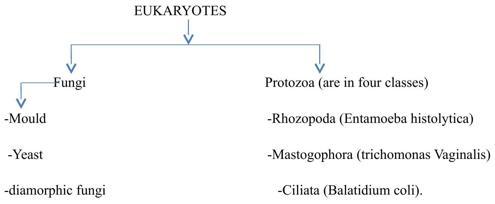
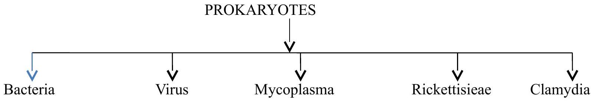

Classification of Microorganisms
Classification of microorganism
Bacterial are free-living microscopic unicellular organism capable of performing life function, growth, metabolism and reproduction because they possess both deoxyribonucleic acid (DNA) and ribonucleic acid, (RNA) and lack chlorophyll, (Arora,2012). Bacteria have been placed in separate kingdom of Protista from animals and plants.
They are classified into Eukaryotes and prokaryotes
Example of Eukaryotes; fungi, algae, slime moulds and protozoa
Example of Prokaryotes; bacteria and green algae (it contain chlorophyll photosynthetic bacteria),
SUBDIVISION-Eukaryote and Prokaryote
-sporozoa (plasmodium falciparum). (Note: likely Plasmodium falciparum is an example of Sporozoa)
BACTERIA Morphology classification
| Cocci | Bacilli | Vibroid (Vibrio) |
|---|---|---|
| Features | Features | Features |
| -They are round or avoid -They are in clusters They are in chains They can be in pairs called They are in groups of four They are in groups of eight |
Diplobacilli Steptobacilli Coccobacilli (brucella) |
Are coma shaped bacilli Are gram negative (-ve). Curved rod shaped Motile |
| Spirillum | Spirochaetes |
|---|---|
| Feature | Features |
| They are spiral like with flagella on both ends | Are spiral like without flagella |
Biological classification
Division —Xlass —Order —Family —Grus —Spesies (Note: typos likely Class, Genus, Species)
Classification according to gram staining
BACILLI
| Gram -ve (takes blue/purple colour) | Gram +ve (take red/pink colour) | ||
|---|---|---|---|
| Motile | None Motile | Motile | None motile |
| -Vibro -Salmonelea -Escherichia coli -Proteus(very motile) -Providentia -Pseudomonaus -Citrobacter -Alcaligen faricalis -Cloaca -Hafnia |
-Shigella -Brucella -klebshila -pasleuralle -Hemophillus |
-bacillus anthrocoid -Clostridium |
-Corynebacterium -Mycobacterium -Lactobacillus -Listeria(motile at 22°C) -Actinomycin -Clostridiumycis -clostridium perfrigesm -clostridium tetani iv |
Cocci
| Gram -ve | Gram +ve |
|---|---|
| -Nesseria gonococcus (diplococcus). -Nesseria meningococcus |
-Staphylococcus -Stroptococcus -Pneumococcus (Diplococcus) G+ve when young -micrococcus -sarcinococcus |
Different between prokaryotes and eukaryotes
| Feature | Prokaryotes cell | Eukaryotic cell |
|---|---|---|
| Size | 1 um | 10um |
| Nuclear membrane | Absent | Present |
| Histones | Absent | Present |
| Sexual reproduction | Absent | present |
| Cytoplasmic ribosomes | 70s | 80s |
| Endoplasmic reticulum | Absent | Present |
| Lysosomes | Absent | Present |
| Feature | Prokaryotes cell | Eukaryotic cell |
|---|---|---|
| Chromosome | single | Multiple |
| Nucleolus | Absent | Present |
| Feature | Prokaryotes cell | Eukaryotic cell |
|---|---|---|
| Micro Filaments and Tubules | Absent | Present |
| Site of oxidativre phosphorylation | Cell membrane | Mitochondria |
| Site of Photosynthesis | Cell membrane | Chloroplast |
| Peptidoglycan | present | Absent |
| Cell membrane composition | Phospholipids and protein | Sterol |